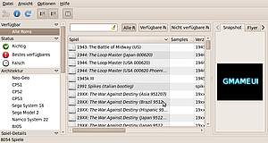
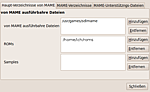
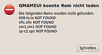

GMAMEUI
Archivierte Anleitung
Dieser Artikel wurde archiviert, da er - oder Teile daraus - nur noch unter einer älteren Ubuntu-Version nutzbar ist. Diese Anleitung wird vom Wiki-Team weder auf Richtigkeit überprüft noch anderweitig gepflegt. Zusätzlich wurde der Artikel für weitere Änderungen gesperrt.
Zum Verständnis dieses Artikels sind folgende Seiten hilfreich:
GMAMEUI ist eine graphische Benutzeroberfläche für MAME. Sie erleichtert das Sammeln, Verwalten und Starten verschiedenster Videospiele, die von MAME emuliert werden. Unterstützt werden eine Reihe von Spielhallen-Videospielautomaten, etwa das Neo-Geo oder das Nintendo Super System.
SDLMAME oder XMAME?¶
Unter Linux stehen zwei MAME-Varianten zur Verfügung: XMAME und SDLMAME. Da XMAME zur Zeit nicht aktiv entwickelt wird  und die aktuelle Version von GMAMEUI ohnehin Fehler bei der Zusammenarbeit mit XMAME aufweist, wird im Folgenden die Installation des Paketes sdlmame vorausgesetzt.
und die aktuelle Version von GMAMEUI ohnehin Fehler bei der Zusammenarbeit mit XMAME aufweist, wird im Folgenden die Installation des Paketes sdlmame vorausgesetzt.
|  |
| Das GMAMEUI Hauptfenster |
Installation¶
Folgende Pakete müssen installiert [1] werden:
gmameui (multiverse )
sdlmame (multiverse )
libsdl1.2debian-pulseaudio (universe)
 mit apturl
mit apturl
Paketliste zum Kopieren:
sudo apt-get install gmameui sdlmame libsdl1.2debian-pulseaudio
sudo aptitude install gmameui sdlmame libsdl1.2debian-pulseaudio
Um diese Pakete installieren zu können, müssen unter Umständen noch die Multiverse-Quellen freigeschaltet werden [2].
Einrichten¶
Pfade¶
GMAMEUI lässt sich über das Menü "Anwendungen -> Spiele" starten. Beim ersten Start weist ein Dialog darauf hin, dass keine "von MAME ausführbaren Dateien" gefunden wurden. Mit einem Klick auf "Ja" öffnet sich nun ein weiterer Dialog, in dem verschiedene Pfade festgelegt werden müssen.
|  |
| Der Pfade-Dialog |
Wichtig sind hier vor allem die Punkte "von MAME ausführbare Dateien" und "ROMs". Sollte GMAMEUI nicht automatisch /usr/games/sdlmame als ausführbare Datei eingesetzt haben, muss dieses manuell durch einen Klick auf "Hinzufügen" nachgeholt werden.
Weiterhin muss mindestens ein Verzeichnis für "ROMS" eingesetzt werden. In den hier angegebenen Verzeichnissen wird GMAMEUI später automatisch nach ROM- und BIOS-Dateien suchen.
Wenn ein korrekter Pfad zu SDLMAME und mindestens ein ROM-Verzeichnis angegeben wurde, kann der Dialog geschlossen werden. GMAMEUI wird nun vorschlagen, die Spieleliste zu aktualisieren. Das ist aber eigentlich nur notwendig, wenn neue ROM-Verzeichnisse eingerichtet wurden bzw. wenn neue ROMs zur Verfügung stehen, über die GMAMEUI noch nicht "informiert" ist.
ROMs und BIOS¶
Um nun Spiele spielen zu können, müssen die entsprechenden ROMs in den oben angegebenen ROM-Pfad kopiert werden. Auf mamedev.org finden sich einige Spiele, die legal heruntergeladen werden können. Einige dieser Spiele unterstützt MAME von Haus aus - sie benötigen also kein zusätzliches BIOS.
Die meisten Spiele benötigen aber zusätzlich zur eigentlichen ROM auch ein BIOS. Möchte man also etwa das Spiel "Metal Slug", das auf der Neo-Geo erschienen ist, emulieren, benötigt man eine ROM mit den Spiel-Daten und ein BIOS für die Neo-Geo (hier: neogeo.zip). Ebenso wie die ROM ist aber auch das BIOS urheberrechtlich geschützt.
Nachdem eine ROM und das entsprechende BIOS im ROM-Pfad abgelegt wurden, muss die Datenbank von GMAMEUI neu aufgebaut werden. Ein Druck auf F5 genügt dazu.
Einstellungen¶
Unter "Optionen -> Standard-Optionen" lässt sich SDLMAME auf vielfältige Weise konfigurieren. So kann dort etwa Antialiasing aktiviert werden. Auch gibt es verschiedene Filter, die sich zuschalten lassen.
Verschiedene weitere Einstellungen lassen sich in MAME selbst vornehmen: Dort kann mit Tab ⇆ jeder Zeit ein Menü eingeblendet werden, in dem sich etwa die Tasten- bzw. Joystickbelegung einrichten lässt. Wie MAME gestartet werden kann, wird im Abschnitt Bedienung beschrieben.
Bedienung¶
Um ein Spiel mit MAME zu starten, empfiehlt es sich zunächst, alle ROMs anzeigen zu lassen, die GMAMEUI erkannt hat. Dazu wird in der linken Leiste des Hauptfensters der Punkt "Verfügbar -> Alle Roms" ausgewählt. Nun werden mehr als 8000 Spiele angezeigt, die von MAME unterstützt werden. Oberhalb dieser Aufzählung befindet sich eine Schaltfläche "Verfügbare ROMs", mit der sich die ROMs auf diejenigen Dateien eingrenzen lassen, die von GMAMEUI tatsächlich im ROM-Verzeichnis gefunden wurden.
Durch einen Doppelklick lässt sich nun jedes beliebige Spiel aus dieser Liste starten.
Problemlösung¶
Dateien fehlen¶
 Ein sehr häufiger Fehler ist das Fehlen von Dateien. Dies kann verschiedene Ursachen haben:
Es fehlt ein zum Spiel passendes BIOS.
Einige Dateien im BIOS sind falsch benannt. In diesem Fall können die falsch benannten Dateien im BIOS schlicht umbenannt werden, da es sich bei dem BIOS in der Regel um ein gewöhnliches .zip-Archiv handelt.
Das Spiel liegt in einer Variante vor, die von MAME nicht erkannt wird. Über "Datei -> Eigenschaften" lassen sich für jedes Spiel zusätzliche Informationen abrufen - etwa darüber, ob es überhaupt unterstützt wird, ob eventuell bestimmte Prüfsummen nicht stimmen oder andere Probleme / Fehler im Zusammenhang mit diesem Spiel bekannt sind.
Sehr schlechter oder gar kein Sound¶
Um SDLMAME in Verbindung mit Pulseaudio Töne zu entlocken, muss folgendes Paket installiert sein: libsdl1.2debian-pulseaudio. Auch Probleme mit SDLMAME beim Beenden lassen sich durch dieses Paket lösen.
Starkes Ruckeln / Sehr langsame Emulation¶
Bisweilen bereitet die Emulation mit Glade starke Probleme. In diesen Fällen kann im Menü "Optionen -> Standard-Optionen" unter "Anzeige" im Reiter "Video" der Video-Modus auf "Software" gesetzt werden.
- Erstellt mit Inyoka
-
 2004 – 2017 ubuntuusers.de • Einige Rechte vorbehalten
2004 – 2017 ubuntuusers.de • Einige Rechte vorbehalten
Lizenz • Kontakt • Datenschutz • Impressum • Serverstatus -
Serverhousing gespendet von